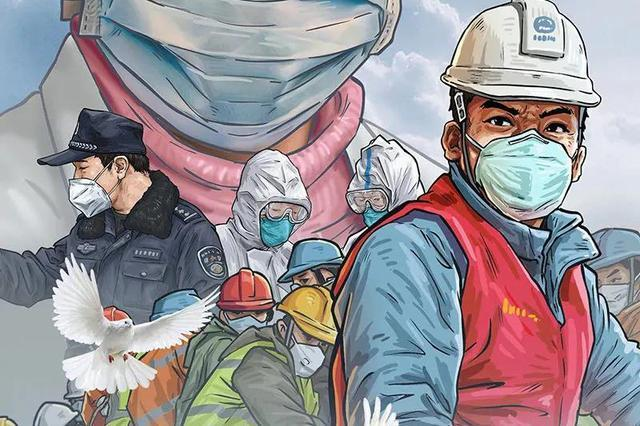

2020叙个旧
2020年是不平凡的一年，全世界都笼罩在新冠疫情的阴影之下，经济社会一度停滞不前，作为普通百姓，也感受到前所未有的危机。好在全国人民同舟共济，共同战疫，这一年走来，比预想中的境遇要好很多，感谢祖国，感谢所有跟疫情搏斗的同胞。

开心的事
老实说，我已经很久没有留意过自己身边有什么开心的事，或许，不难过就是开心？
- 工作城市转移：是的，我从北京转到了成都，其实这6年的北漂都源自多年前一个小小的信封，时间太久了，北漂的目的已经记不清了，也许完成了，也许没有。随着时间的推移，恋家的情结愈发强烈，一直叨念着回到家乡，一场疫情将其变为现实，来到成都，生活似乎并没有太大的变化，依然是奔波在夜色中的打工人，但至少少了些担忧，多了些希望。
- 读了一些书，文学技术兼顾，也许并没有太多直接收益，至少它可以让我不被愚昧吞噬。
- 小博客逐渐稳定下来，发布了十几篇文章，虽然质量参差不齐，但也算一个好的开端。
- 职业生涯、财富积累正向增长，家人安康，天下太平，这是我向往的，也是世界人民向往的。
遗憾的事
没有什么特别遗憾的，生活一如既往。如果非得说，“个人影响力”算一个吧，我提了好多次的影响力建设，至今仍一事无成，也不知道是技术太菜，还是脑袋不够聪明，找不到灵感，也谈不上创新。靠技术吃饭的行业，影响力、核心竞争力是一个绕不开的坎，否则，就等着被后浪拍在沙滩上吧！
2021起个头
技术方向
- 聚焦架构设计与领域建模，持续提升架构水平和抽象能力，按理论学习 -> 案例分析 -> 项目实践三步流程，思考数据智能、经营分析领域内的需求及难点，结合大数据生态探索解决方案。
- 持续挖掘自身优势，沉淀经验分享，结合工作难点寻求创新突破，这是新一年最大的挑战之一。
- 保持学习状态，提升学习效率（读书、公开课、论文、实践等等），养成总结、写作的好习惯，坚信勤能补拙。
- 遇见大佬就别放过，虽然会很辛苦，但一定是受益无穷。
生活转变
- 适应成都style，提升以下生活质量，过的开心一点，轻松一点。
- 投资自己，包括但不限于娱乐投资、健康投资、社交关系投资等等。
- 努力克服拖拉、懒惰、畏首畏尾的弱点，必要时来个破釜沉舟也未尝不可。
- 遇见会玩的就别放过，可能玩的并不开心，但“会玩”也是人格软实力之一。
心态转变
心态转变也许是最难的，无论如何，也要去尝试一下。
- 克服冲动易怒的情绪 ，这是职场禁忌，也是一个人的基本修养，对事不对人 值得好好品味。
- 乐观一点，包容一点 ，世界总是朝着好的方向在发展，只是需要更多的时间。
- 自信一点，皮实一点 ，凡事尽力而为，哪怕失败了又怎么样？生活还得继续。
- 遇见心态阳光的就别放过，或许心中有些疑惑，但近朱者赤，终有所获。
说点实在的
好好经营这个破站，再倒下我就真的没有耐心搞下去了，订几条原则吧：
- 本站以内容创作为主，所有文章保证100%原创，哪怕是瞎编的。
- 提升创作质量，无论是技术文章，还是生活随笔，都要有模有样，简单来说，自己愿意看自己的文章。
- 保持初心，坚持下去。